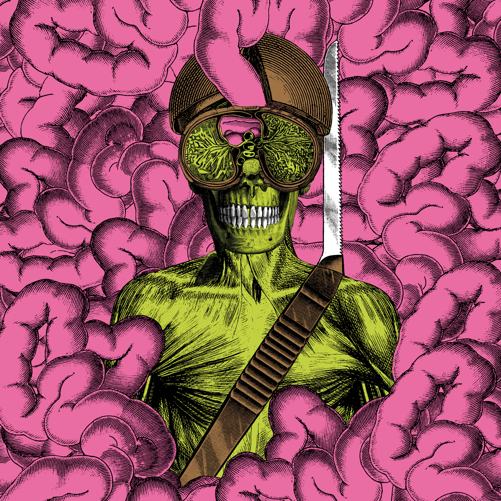

Similar style but less conventionally structured songs and longer jams, if you like Mega-Feast
Carrion Crawler / The Dream
More of this sound but cleaner and more varied!
Dog PoisonWarm Slime is the Oh Sees album that sounds closest to the band's live show and part way through listening to this I wondered if it might secretly actually be a live album. It captures the impossibly loud and overwhelming wall of reverb and clanging guitars that they pull off at every show. There's even one point between songs where he says "We're Thee Oh Sees." The title track is extended into a 13 and a half minute krautrock jam (something the band does live, a lot) and in true krautrock style they put the extended jam right at the front of the album. I wouldn't put this as one of their best albums, there are others that do this sound better, but if you're a fan you need it.
Similar style but less conventionally structured songs and longer jams, if you like Mega-Feast
Carrion Crawler / The Dream
More of this sound but cleaner and more varied!
Dog Poison